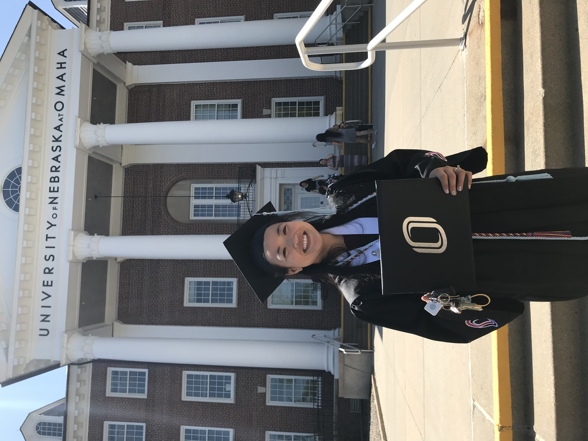
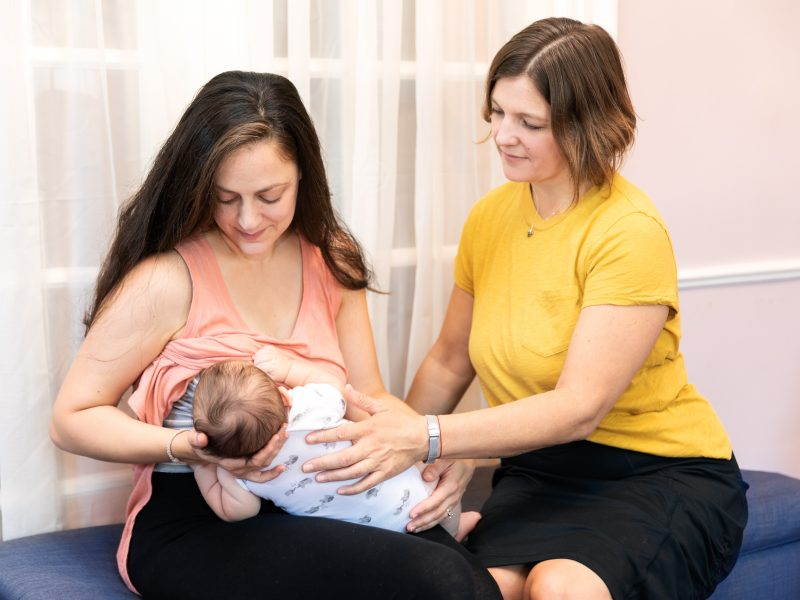

About Page
Accomplishments
Graduating College
Grace graduated from the University of Nebraska Omaha in 2018 with a degree in Speech Language Pathology. Since then she decided not to get her Master's in SLP and instead has focused on herself and her family. Grace is considering maybe going back to college someday and getting a degree in teaching instead, as she loves working with children and helping them learn.
Having Kids and Being a Stay at Home Mom

Since Grace was in her teen years she's wanted to have kids of her own. One of her biggest accomplishments is not only having 2 kids, but that her husband and her were able to get to a place financially where they were able to let her achieve another one of her childhood goals, to be a stay at home mom. These past few months have been the first months of her being a stay at home mom, and she couldn't be happier. It definitely has its difficulties and trials, but she loves it and can't imagine doing anything else right now. One of her favorite things to do currently is to take her kids to the park and just let them play in the sand and on the playsets with the other kids.
Future Goals
Becoming a Lactation Consultant
Since Grace first became a mother in the past few years, she's become more and more interested in becoming a lactation consultant, particularly because of the mothers she's met who had issues with this process for their own children. After a few weeks of practice with her first child, Grace has been a complete natural at breastfeeding and wants to be able to help other mothers be able to enjoy the same experience with their children as well.
Back to Top